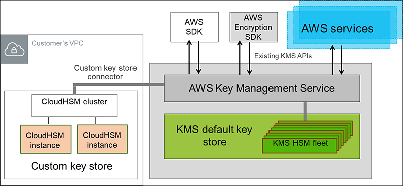

Keys and Parameter Stores
KMS (Key Management Service)
- KMS is a managed service that enables you to easily encrypt your data.
- Fully integrated with IAM for authorization.
- You can use AWS Identity and Access Management (IAM) policies in combination with key policies to control access to your customer AWS KMS keys.
- Integration with EBS, S3, Redshift, RDS, SSM.
- Symmetric: AES-256 keys
- Asymmetric: RSA & ECC Key pairs.
- Types of KMS Keys: Customer Managed vs. AWS Managed vs. AWS owned.
- KMS Key source - custom key store (Cloud HSM). Why? FIPS I40-2 Level 3 vs. Level 2 in KMS native.
- KMS Multi-region keys: One primary key in a region and replicas in additional regions.
- Audit use of keys by inspecting logs in AWS CloudTrail
- Creating your own KMS key gives you more control than you have with AWS managed KMS keys.
- You can schedule a AWS KMS key and associated metadata that you created in AWS KMS for deletion, with a configurable waiting period from 7 to 30 days.
KMS does not protect data in-transit!
Customer Managed vs AWS Managed Keys
Customer managed keys are KMS keys in your AWS account that you create, own, and manage. You have full control over these KMS keys, including establishing and maintaining their key policies, IAM policies, and grants, enabling and disabling them, rotating their cryptographic material, adding tags, creating aliases that refer to the KMS keys, and scheduling the KMS keys for deletion.
AWS managed keys are KMS keys in your account that are created, managed, and used on your behalf by an AWS service integrated with AWS KMS to protect your resources in the service.
In general, unless you are required to control the encryption key that protects your resources, an AWS managed key is a good choice.
Key Material
- The key material for a KMS key is generated within hardware security modules (HSMs) managed by AWS KMS.
- Alternatively, you can import key material from your own key management infrastructure and associate it with a KMS key.
- You can also have the key material generated and used in an AWS CloudHSM cluster as a part of the custom key store feature in AWS KMS.
Bring your Own Key (BYOK): You can use your company HSMs (on-premise) as an independent CMK source and import them to AWS KMS by creating a CMK with no material and using EXTERNAL as the origin.
Bring your Own Key
- Create a KMS key in AWS KMS that has no key material associated.
- Download the import wrapping key and import token from KMS.
- Import the wrapping key provided by KMS into the HSM.
- Create a 256 bit symmetric key on AWS CloudHSM.
- Use the imported wrapping key to wrap the symmetric key.
- Import the symmetric key into AWS KMS using the import token from step 2.
- Terminate your HSM, which triggers a backup. Delete or leave your cluster, depending on your needs.

Custom (Controlled) Key store
You can configure your own CloudHSM cluster and authorize AWS KMS to use it as a dedicated key store for your keys rather than the default AWS KMS key store. KMS keys that are generated in your custom key store never leave the HSMs in the CloudHSM cluster in plaintext and all AWS KMS operations that use those keys are only performed in your HSMs.
CloudHSM enables your organization to control (or) fully manage the Key Store. Customer managed CMK enables your organization to provide your own keys.
RDS Security
- KMS encryption at rest for underlying EBS volumes / snapshots
- Can copy an un-encrypted RDS snapshot into an encrypted one
- Transparent Data Encryption (TDE) for Oracle and SQL Server
SSM Parameter store ($)
- Secure storage for configuration and secrets
- Optional seamless encryption using KMS.
- Configuration management using path & IAM
- Parameters hierarchy: GetParameters or GetParametersByPath API.
- SSM Parameter provides an option to store values in plaintext or encrypt it with a KMS key.
AWS Secrets Manager ($$$)
- Storing secrets. Capability to force rotation of secrets every X days.
- Control access to secrets using resource based policy.
- Lambda function is provided for RDS, Redshift and DocumentDB
- KMS Encryption is mandatory.
- AWS Secrets Manager only stores encrypted data.
Scenarios?
When to use CloudHSM Custom store?
If you have stringent compliance requirements that mandate that you manage your own HSM. In this case, KMS can use CloudHSM as a store.

Cloud HSM
Managing Quorum Authentication
The first time setup for M of N authentication involves creating and registering a key for signing and setting the minimum value on the HSM. This involves the following high-level steps:
- To use quorum authentication, each CO must create an asymmetric key for signing (a signing key). This is done outside of the HSM. Keys can be personal keys or public keys.
- Create an RSA key pair: This can be done with OpenSSL.
- Create and sign a registration token: This can be done with OpenSSL.
- Register the public key with the HSM. Login as a CO and register the public Key with HSM.
- A CO must log in to the HSM and then set the quorum minimum value, also known as the m value. This is the minimum number of CO approvals that are required to perform HSM user management operations. Any CO on the HSM can set the quorum minimum value, including COs that have not registered a key for signing.
You will need the signed token, the unsigned token, and the public key to register the CO as an MofN user with the HSM.
https://docs.aws.amazon.com/cloudhsm/latest/userguide/quorum-authentication.html#quorum-authentication-overview